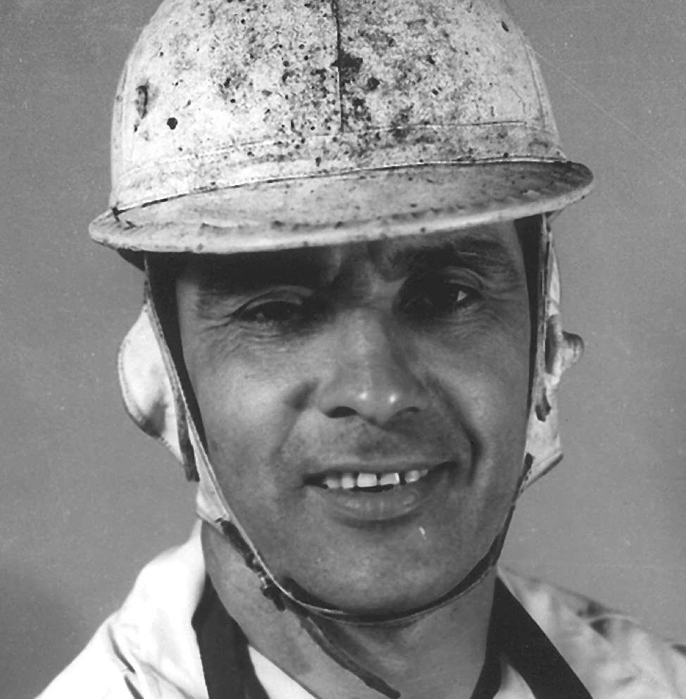
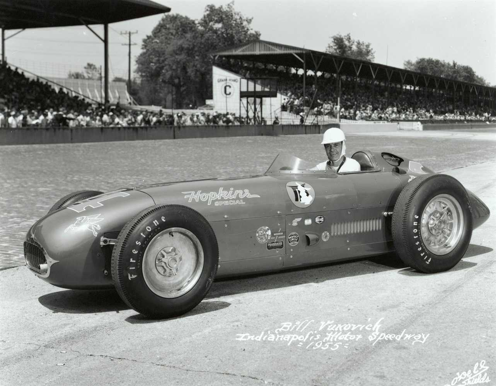
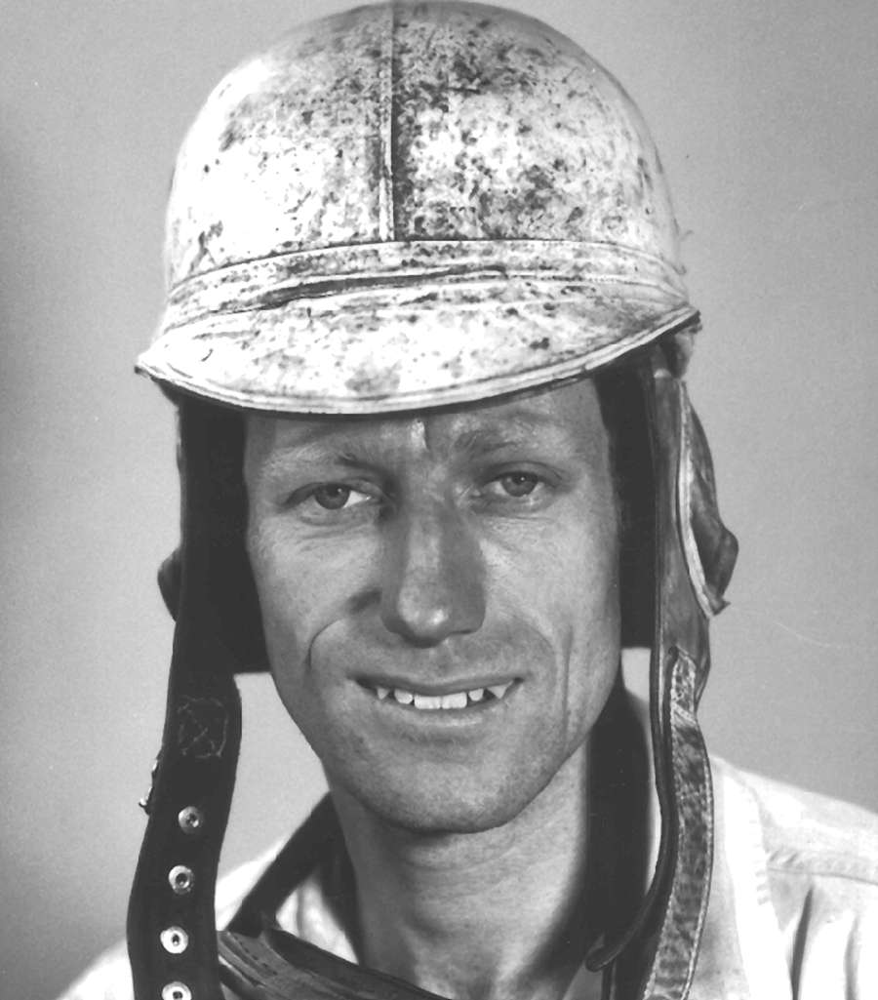
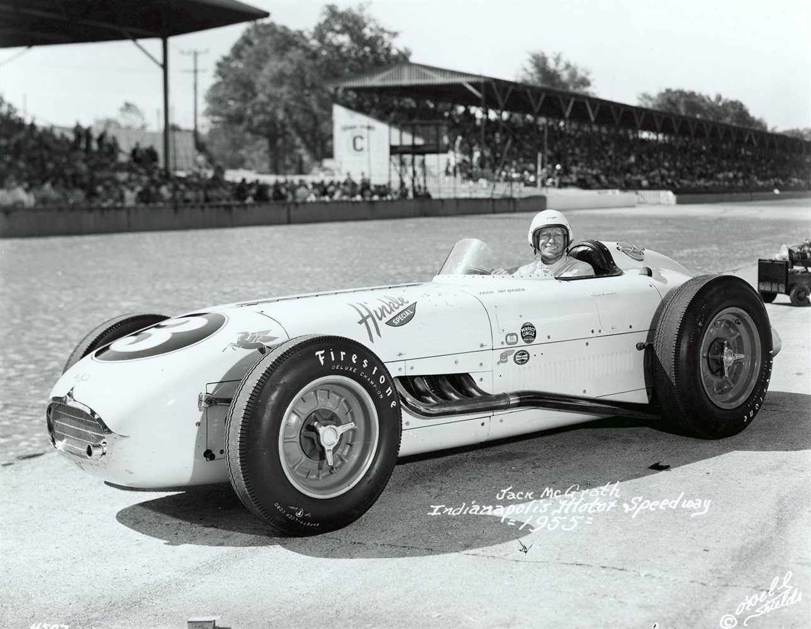
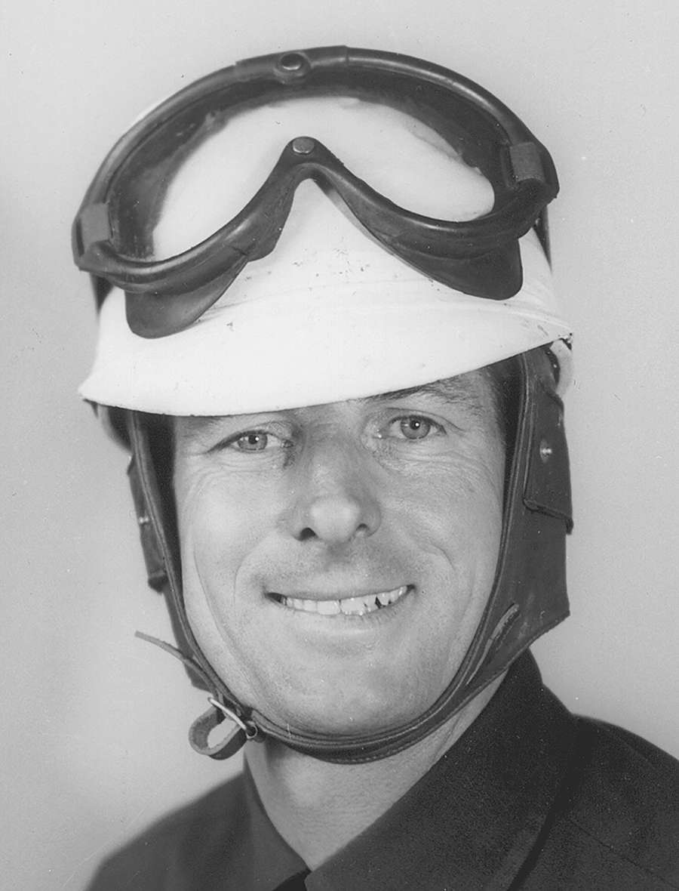
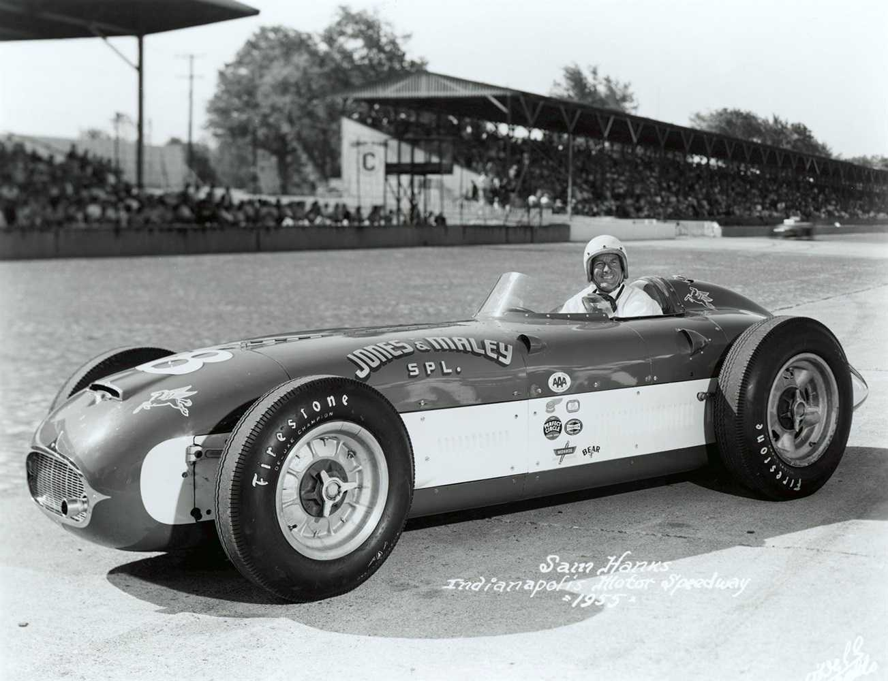
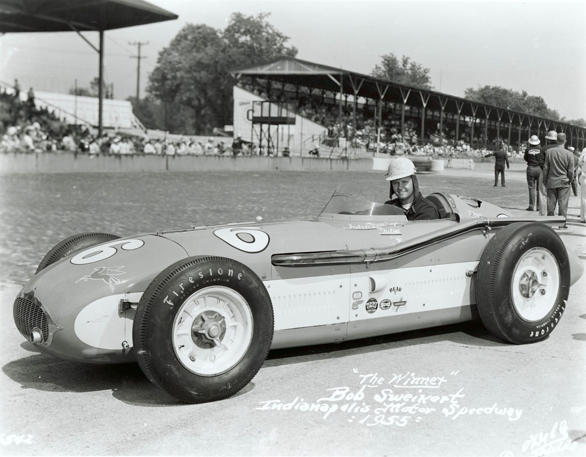

Bill Vukovich

Bill Vukovich was considered the favorite entering the 39th International 500-Mile Sweepstakes. He had won the previous two Indianapolis 500s and led the most laps in each of the last three races.
Vukovich appeared headed for victory in 1952, leading with just nine laps remaining when a steering linkage broke on the Fuel Injection Special. Forced to nurse the crippled car along the outside wall, he surrendered the lead and the victory to Troy Ruttman.
Returning in 1953, Vukovich again drove for car owner Howard Keck and started from the pole position. In what is often remembered as the “Hottest 500,” he dominated the race, leading all but five laps on his way to his first Indianapolis 500 victory.
By 1954, Keck's Fuel Injection Special was beginning to show its age. The two-year-old Kurtis Kraft qualified only 19th, but the team found the speed they needed for race day. Vukovich charged to the front, taking the lead on laps 61, 92, and finally for good on lap 150. He won his second consecutive Indianapolis 500 at a record average speed of 130.840 mph, becoming just the third driver to win back-to-back 500s.
Keck retired from racing following the 1954 season and released Vukovich to drive for Lindsey Hopkins, owner of a new Kurtis roadster. Vukovich accepted the offer but insisted on bringing his trusted mechanics with him. As preparations began for the 1955 race, many believed he was the man most likely to become the first driver to win three consecutive Indianapolis 500s.

Jack McGrath

Another driver many expected to contend for victory in 1955 was Jack McGrath. Widely regarded as one of the fastest drivers in American racing, McGrath had shown tremendous speed at Indianapolis since his debut in 1948. He qualified third in just his second start in 1949 and steadily established himself as one of the Speedway's top competitors.
Vukovich appeared headed for victory in 1952, leading with just nine laps remaining when a steering linkage broke on the Fuel Injection Special. Forced to nurse the crippled car along the outside wall, he surrendered the lead and the victory to Troy Ruttman.
Driving for Wichita car owner Jack Hinkle, McGrath finished third in 1951 and recorded additional top-five finishes in 1953 and 1954. Despite his consistent success, victory in the Indianapolis 500 remained elusive.
In 1954, McGrath unveiled Hinkle's new cream-colored Kurtis Kraft roadster and captured the pole position with a four-lap average of 141.033 mph, becoming the first driver to break the 140-mph barrier in qualifying. Although magneto trouble hampered his race, he still finished third after leading 47 laps.
Returning with the same team in 1955, McGrath was again considered one of the leading contenders for the Borg-Warner Trophy.

Sam Hanks

At 40 years of age, Sam Hanks was one of the most experienced drivers in the 1955 field. He made his first Indianapolis 500 start in 1940, finishing 13th, and returned to the Speedway when racing resumed following World War II.
By the early 1950s, Hanks had established himself as one of America's top championship drivers. He finished third at Indianapolis in 1952 and followed that performance with another third-place finish in 1953, the same year he captured the AAA National Championship.
Hanks won at DuQuoin in 1954 and retired from full-time National Championship competition at season's end. Despite stepping away from the circuit, he planned to return to Indianapolis in 1955, driving George Salih's Kurtis Kraft-Offenhauser. The veteran would be making his eleventh attempt to win the Indianapolis 500.

Bob Sweikert

Still a young and rising star, Bob Sweikert was preparing for his fourth Indianapolis 500 start in 1955. The California native had quickly established himself as one of the country's top championship and sprint car drivers. In 1953, he won the inaugural Hoosier Hundred at the Indiana State Fairgrounds and finished runner-up in the AAA Midwest Sprint Car standings.
Sweikert continued his ascent in 1954, winning at Syracuse and placing sixth in the final AAA National Championship standings. Though his best Indianapolis finish was only 14th, many believed his talent and determination would soon make him a contender at the Speedway.
Now driving the powerful John Zink Special with A.J. Watson as chief mechanic, Sweikert entered the 1955 race looking to establish himself among the elite drivers of American racing.
